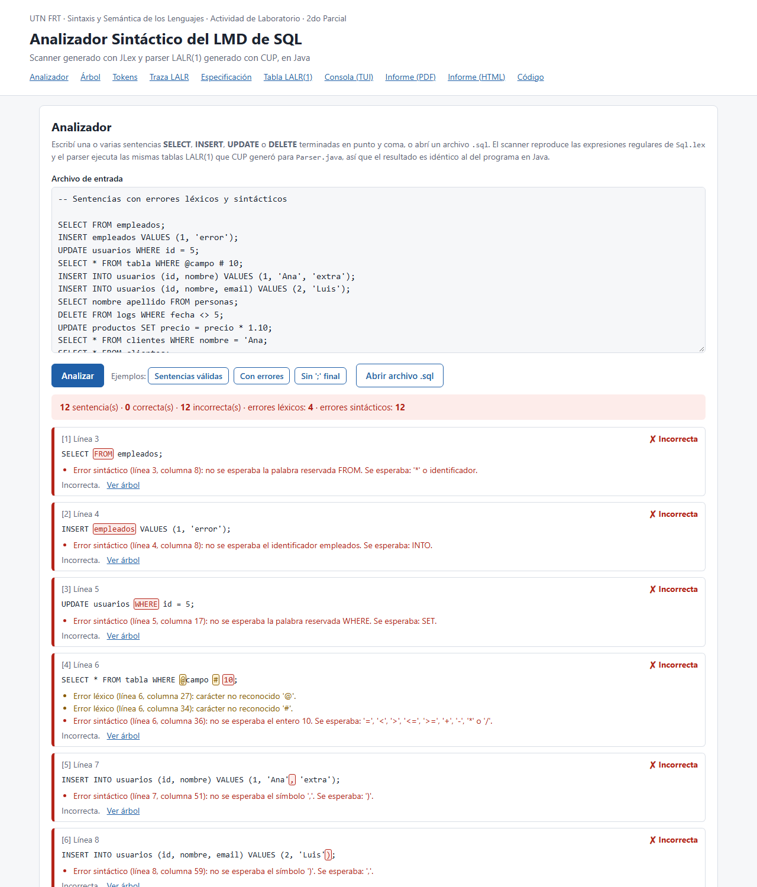
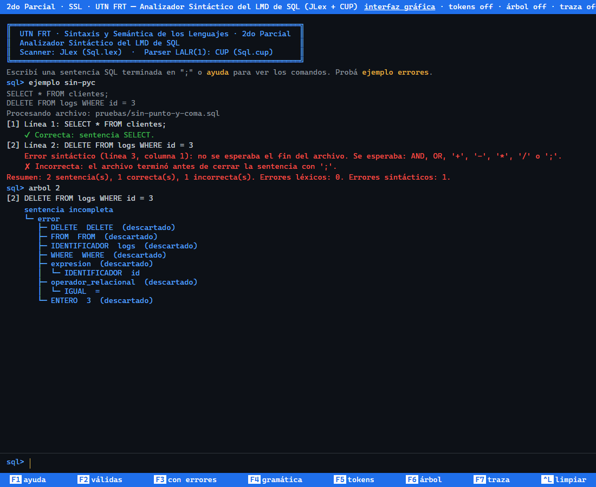

UNIVERSIDAD TECNOLÓGICA NACIONAL
Facultad Regional Tucumán
Departamento: SISTEMAS
Cátedra: Sintaxis y Semántica de los Lenguajes
ACTIVIDAD
DE LABORATORIO
2do. PARCIAL
Analizador Sintáctico (Parser)
Herramientas de metacompilación JLex y Cup
Subconjunto LMD (Lenguaje de Manipulación de Datos) de SQL
| Integrantes | Legajo | Comisión |
|---|
| Brandan, Lucas | 60911 | 2K6 |
| Brandan, Mariano | 60910 | 2K6 |
| Guebel, Lautaro | 60462 | 2K7 |
| Martí, Mateo | 60244 | 2K6 |
| Pérez Arias, Tomás | 60798 | 2K7 |
| Docente: | Ing. Ricardo Silva Teseira |
| Año: | 2026 |
| Interfaz web: | https://gagaismo.github.io/LaboratorioSSL-parte-2/ |
| Código fuente: | https://github.com/Gagaismo/LaboratorioSSL-parte-2 |
Índice
- Enunciado
- Marco teórico
- Especificación léxica: archivo JLex (
Sql.lex)
- Especificación sintáctica: archivo Cup (
Sql.cup)
- Integración del scanner y el parser: programa principal
- Compilación y ejecución
- Pruebas
- Interfaces web y de consola
- Conclusiones
- Anexo A: Código fuente
1. Enunciado
Dadas las reglas léxicas y sintácticas del subconjunto de instrucciones LMD (Lenguaje de Manipulación de Datos) del
lenguaje SQL que utilizan los SGBD (Sistemas Gestores de Bases de Datos), construir un Parser (analizador
sintáctico) codificado en Java, utilizando las herramientas de metacompilación JLex y Cup. JLex parte de
las expresiones regulares de los componentes léxicos del lenguaje y obtiene un Scanner (analizador léxico) en
Java, capaz de obtener los tokens y suministrárselos al parser. Cup parte de una GIC descripta en notación
BNF, que especifica las reglas sintácticas del lenguaje, y obtiene un parser en Java capaz de detectar los
errores sintácticos a partir de un archivo de texto que contiene líneas de instrucciones LMD de SQL.
Las reglas del lenguaje son las del material de la cátedra Sintaxis estándar ANSI básica del LMD SQL:
INSERT INTO tabla (columna1, columna2...) VALUES (valor1, valor2...) ;
INSERT INTO tabla VALUES (valor1, valor2...) ;
UPDATE tabla SET columna1 = valor1, columna2 = valor2... WHERE columnaN = valorN ;
DELETE FROM tabla WHERE columna1 = valor1 ;
SELECT * FROM tabla ;
SELECT columna1, columna2... FROM tabla ;
- tabla, columna1, columna2 son identificadores; si contienen espacios se escriben entre comillas dobles.
- valor1, valor2 son expresiones del mismo tipo que las columnas. Las cadenas van entre comillas simples.
- Las expresiones usan los operadores
+ - * / < > <= >= = AND OR NOT y solo números enteros.
- En el INSERT con lista de columnas, las cantidades de columnas y de valores deben ser iguales.
2. Marco teórico
2.1. Análisis léxico y sintáctico
El analizador léxico (scanner) lee el texto fuente carácter por carácter y lo agrupa en lexemas; a cada
lexema le asigna una categoría o token (palabra reservada, identificador, constante, operador). Los
componentes léxicos son lenguajes regulares (tipo 3 de Chomsky), por lo que se describen con expresiones
regulares y se reconocen con un autómata finito. El analizador sintáctico (parser) recibe la secuencia
de tokens y verifica que respete la estructura del lenguaje, descripta con una gramática independiente del
contexto (GIC, tipo 2), cuyo reconocedor es un autómata de pila.
2.2. JLex
JLex es un generador de analizadores léxicos para Java (el equivalente a Lex de C). Su archivo de especificación
tiene tres secciones separadas por %%: código de usuario (copiado al principio del archivo
generado: package e import), directivas (opciones como %class,
%cup, %char, %ignorecase, código propio entre %{ %} y
definiciones de macros con expresiones regulares) y reglas léxicas: pares expresión regular
{ acción en Java }. JLex construye un AFN por cada regla, lo convierte en un único AFD y lo minimiza. Al
analizar aplica dos criterios: gana la regla que reconoce el lexema más largo y, si hay empate, la que está
escrita primero.
2.3. Cup y el análisis LALR(1)
Cup (Constructor of Useful Parsers) es el equivalente de Yacc para Java. A partir de una GIC escrita en BNF
genera un analizador ascendente LALR(1): construye la colección de elementos LR(1), fusiona los estados que
tienen el mismo núcleo (eso es lo que distingue LALR de LR canónico) y produce las tablas ACCIÓN e
IR-A. El parser es un autómata de pila que, en cada paso, mira el estado del tope de la pila y el token de
entrada (un símbolo de anticipación) y hace una de cuatro cosas: desplazar el token y pasar a un estado,
reducir por una producción (saca de la pila tantos símbolos como tiene la parte derecha, apila el no terminal
de la izquierda y ejecuta su acción semántica), aceptar o informar un error. El archivo de Cup tiene
cinco partes: paquete e importaciones, código de usuario (parser code {: ... :}), declaración de
terminales y no terminales, precedencias, y símbolo inicial con las producciones.
2.4. Integración
Cup genera dos clases: el parser y una clase de constantes con un número por cada terminal (con las opciones
-parser Parser -symbols Simbolos se llaman Parser y Simbolos, como en los
ejemplos de la cátedra). Con la directiva %cup, la clase que genera JLex implementa la interfaz
java_cup.runtime.Scanner: cada vez que el parser pide un token llama a next_token(), que
devuelve un objeto java_cup.runtime.Symbol con el número de terminal (el mismo de
Simbolos), su valor (el lexema) y su posición.
2.5. Recuperación de errores
Cup reserva el terminal especial error. Cuando la tabla indica error, el parser llama a
syntax_error(), desapila hasta encontrar un estado que pueda desplazar error, lo desplaza y
descarta tokens de entrada hasta que puede seguir analizando normalmente. Con la producción
sentencia ::= error PTOCOMA un error dentro de una sentencia hace descartar el resto de esa sentencia
hasta su punto y coma, y el análisis continúa con la siguiente.
3. Especificación léxica: archivo JLex (Sql.lex)
3.1. Tokens y expresiones regulares
| Token | Expresión regular (sintaxis JLex) | Ejemplos |
|---|
| SELECT, FROM, WHERE, INSERT, INTO, VALUES, UPDATE, SET, DELETE, AND, OR, NOT | "SELECT" "FROM" ... "NOT" | select, Where |
| IGUAL, MENOR, MAYOR, MENORIGUAL, MAYORIGUAL | "=" "<" ">" "<=" ">=" | <= |
| MAS, MENOS, ASTERISCO, DIVISION | "+" "-" "*" "/" | * |
| COMA, PTOCOMA, LPAREN, RPAREN | "," ";" "(" ")" | ; |
| IDENTIFICADOR | {LETRA}({LETRA}|{DIGITO})*
\"[^\"\r\n]+\" | agenda_telefonica
"nombre completo" |
| ENTERO | {DIGITO}+ | 50000 |
| CADENA | '([^'\r\n]|'')*' | 'Roberto Jeldrez'
'It''s ok' |
| se descartan | [\ \t\r\n\f]+ "--"[^\r\n]* | espacios, comentarios |
| error léxico | '([^'\r\n]|'')* \"[^\"\r\n]* . | 'abc @ # |
con las macros LETRA = [A-Za-z_] y DIGITO = [0-9]. En notación matemática, siendo
L las letras, D los dígitos y c la comilla simple:
IDENTIFICADOR = L(L + D)*, ENTERO = D+ y
CADENA = c((Σ − {c, fin de línea}) + cc)*c.
3.2. Decisiones de diseño
- Palabras reservadas sin distinguir mayúsculas: SQL no distingue
SELECT de select.
Se usa la directiva %ignorecase de JLex en lugar de escribir [Ss][Ee][Ll]....
- Palabras reservadas antes que IDENTIFICADOR: el lexema
FROM lo reconocen las dos reglas con
la misma longitud, y gana la primera. En cambio fromage es un identificador porque esa regla reconoce
un lexema más largo.
<= y >= se reconocen como un solo token por la regla del lexema más largo.
El operador <> no está entre los que pide el material, así que se lee como <
seguido de > y el parser lo rechaza.- Constantes: solo enteros, como indica el material;
1.10 produce un error léxico en el punto.
Las cadenas usan comillas simples y admiten la comilla duplicada '' dentro, como en SQL estándar.
- Posiciones: con
%char cada token lleva su desplazamiento desde el inicio del archivo
(left = inicio, right = fin). Con eso se informa la línea y la columna de cada error y Cup
propaga las posiciones a los no terminales.
- Errores léxicos: la última regla (
.) atrapa cualquier carácter que no forme parte de un token,
se informa con su línea y columna y el scanner sigue con el carácter siguiente (no se corta el análisis). También se
informan las cadenas e identificadores entre comillas que no se cierran antes del fin de línea.
- Comentarios
-- ... hasta el fin de línea, como en SQL, para poder documentar los archivos de prueba.
4. Especificación sintáctica: archivo Cup (Sql.cup)
4.1. Gramática en BNF
G = ⟨VN, VT, P, programa⟩, con los terminales de la sección 3 y las siguientes producciones
(45 producciones; λ indica la cadena vacía):
$START ::= programa EOF
programa ::= lista_sentencias
| λ
lista_sentencias ::= lista_sentencias sentencia
| sentencia
sentencia ::= sent_select PTOCOMA
| sent_insert PTOCOMA
| sent_update PTOCOMA
| sent_delete PTOCOMA
| error PTOCOMA
sent_select ::= SELECT proyeccion FROM IDENTIFICADOR clausula_where
proyeccion ::= ASTERISCO
| lista_columnas
lista_columnas ::= lista_columnas COMA IDENTIFICADOR
| IDENTIFICADOR
clausula_where ::= WHERE condicion
| λ
sent_insert ::= INSERT INTO IDENTIFICADOR LPAREN columnas_valores RPAREN
| INSERT INTO IDENTIFICADOR VALUES LPAREN lista_valores RPAREN
columnas_valores ::= IDENTIFICADOR RPAREN VALUES LPAREN expresion
| IDENTIFICADOR COMA columnas_valores COMA expresion
lista_valores ::= lista_valores COMA expresion
| expresion
sent_update ::= UPDATE IDENTIFICADOR SET lista_asignaciones clausula_where
lista_asignaciones ::= lista_asignaciones COMA asignacion
| asignacion
asignacion ::= IDENTIFICADOR IGUAL expresion
sent_delete ::= DELETE FROM IDENTIFICADOR clausula_where
condicion ::= condicion OR condicion
| condicion AND condicion
| NOT condicion
| expresion operador_relacional expresion
| LPAREN condicion RPAREN
operador_relacional ::= IGUAL
| MENOR
| MAYOR
| MENORIGUAL
| MAYORIGUAL
expresion ::= expresion MAS expresion
| expresion MENOS expresion
| expresion ASTERISCO expresion
| expresion DIVISION expresion
| LPAREN expresion RPAREN
| ENTERO
| CADENA
| IDENTIFICADOR
Precedencia y asociatividad declaradas (de menor a mayor):
precedence left OR;
precedence left AND;
precedence right NOT;
precedence left MAS, MENOS;
precedence left ASTERISCO, DIVISION;
4.2. Decisiones de diseño
- Varias sentencias por archivo:
lista_sentencias es recursiva a izquierda (la forma que
conviene en un parser ascendente, porque no hace crecer la pila) y cada sentencia termina en ;.
- Condiciones separadas de las expresiones:
condicion combina comparaciones con AND, OR y NOT;
expresion es aritmética. Así WHERE sueldo o WHERE a + 1 son errores
sintácticos (falta la comparación) y SET x = a > b también.
- Ambigüedad resuelta con precedencias: las reglas
expresion ::= expresion MAS expresion o
condicion ::= condicion AND condicion son ambiguas; las declaraciones precedence le
indican a Cup cómo resolver los conflictos desplazar/reducir (por ejemplo, en a + b * c se desplaza el
* porque tiene mayor precedencia, y en a - b - c se reduce primero por la asociatividad a
izquierda). Con eso Cup informa 0 conflictos.
- Igual cantidad de columnas y valores: en el INSERT con lista de columnas, la producción
columnas_valores ::= IDENTIFICADOR COMA columnas_valores COMA expresion anida cada columna con su
valor, igual que la gramática de anbn. La restricción, que una gramática regular no
podría expresar, queda dentro de la GIC: INSERT INTO t (a, b) VALUES (1); es un error sintáctico
("se esperaba ','").
- WHERE opcional en SELECT, UPDATE y DELETE (
clausula_where ::= WHERE condicion | λ). El
material muestra el SELECT básico sin WHERE, pero la condición es parte del estándar y de los casos de prueba.
- Recuperación de errores:
sentencia ::= error PTOCOMA. Además se redefine
error_sync_size() para que devuelva 1: con el valor por defecto (3), después de un error Cup necesita
analizar bien tres tokens seguidos, y si la sentencia siguiente también tiene un error, las dos se fusionan y el
segundo error no se informa.
- Mensajes de error: se redefine
syntax_error() para informar línea, columna, el token inesperado
y los terminales que se esperaban. Esos terminales salen de la fila del estado del tope en la tabla ACCIÓN, pero como
LALR fusiona estados, la fila puede tener terminales que en ese contexto no corresponden; por eso cada candidato se
prueba sobre una copia de la pila (aplicando las reducciones hasta ver si se desplaza). unrecovered_syntax_error()
se redefine para informar la sentencia que quedó sin cerrar al final del archivo, sin lanzar una excepción.
- Acciones semánticas: al reducir cada
sentencia se informa si es correcta (y de qué tipo) o
incorrecta, junto con los errores léxicos y sintácticos que ocurrieron entre su primer token y su ;.
Una sentencia sintácticamente válida que tuvo errores léxicos (el scanner descartó caracteres) se informa como
incorrecta.
4.3. Tabla LALR(1)
Cup genera 97 estados sin conflictos. La tabla completa (ACCIÓN e IR-A) se puede ver en la
interfaz web, y la fila de cualquier estado en la consola con el comando estado <n>. Como ejemplo,
la traza del análisis de SELECT * FROM clientes;:
| Paso | Pila (símbolo estado) | Entrada | Acción |
|---|
| 1 | 0 | SELECT | desplazar 9 |
| 2 | 0 SELECT 9 | * | desplazar 50 |
| 3 | 0 SELECT 9 ASTERISCO 50 | FROM | reducir proyeccion ::= ASTERISCO |
| 4 | 0 SELECT 9 proyeccion 52 | FROM | desplazar 56 |
| 5 | 0 SELECT 9 proyeccion 52 FROM 56 | clientes | desplazar 57 |
| 6 | 0 SELECT 9 proyeccion 52 FROM 56 IDENTIFICADOR 57 | ; | reducir clausula_where ::= |
| 7 | 0 SELECT 9 proyeccion 52 FROM 56 IDENTIFICADOR 57 clausula_where 59 | ; | reducir sent_select ::= SELECT proyeccion FROM IDENTIFICADOR clausula_where |
| 8 | 0 sent_select 4 | ; | desplazar 85 |
| 9 | 0 sent_select 4 PTOCOMA 85 | EOF | reducir sentencia ::= sent_select PTOCOMA |
| 10 | 0 sentencia 2 | EOF | reducir lista_sentencias ::= sentencia |
| 11 | 0 lista_sentencias 11 | EOF | reducir programa ::= lista_sentencias |
| 12 | 0 programa 1 | EOF | desplazar 96 |
| 13 | 0 programa 1 EOF 96 | EOF | aceptar |
5. Integración del scanner y el parser: programa principal
El paquete sql tiene cinco clases: Lexico (generada por JLex), Parser y
Simbolos (generadas por Cup), Analisis y Main. Main abre el archivo
como flujo de caracteres (UTF-8), crea el scanner con ese flujo, crea el parser pasándole el scanner y llama a
parse(), igual que el Main del ejemplo lenC0 de la cátedra. Analisis es
el estado compartido entre el scanner y el parser: guarda la posición de cada token y los errores pendientes, los
asigna a la sentencia en la que ocurrieron, traduce las posiciones a línea y columna y escribe el informe y el
resumen. El programa termina con código 0 si no hubo errores y 1 si los hubo.
6. Compilación y ejecución
El script construir.bat hace los pasos que muestran los videos de la cátedra, desde la línea de
comandos (requiere un JDK 8 o posterior):
javac -d build\herramientas herramientas\JLex\Main.java herramientas\java_cup\*.java herramientas\java_cup\runtime\*.java
cd src\sql
java -cp ..\..\build\herramientas JLex.Main Sql.lex (genera Sql.lex.java, se renombra a Lexico.java)
java -cp ..\..\build\herramientas java_cup.Main -parser Parser -symbols Simbolos < Sql.cup
cd ..\..
javac -cp build\herramientas -d build\clases src\sql\*.java
java -cp build\clases;build\herramientas sql.Main pruebas\validas.sql
Para NetBeans: crear un proyecto Java con fuentes existentes, agregar src (paquete sql) y
herramientas (paquete java_cup.runtime) como carpetas de fuentes y pasar la ruta del
archivo .sql como argumento en Run → Set Project Configuration → Arguments. Las clases generadas
(Lexico, Parser, Simbolos) están incluidas en el repositorio, así que no hace
falta volver a generarlas para ejecutar.
7. Pruebas
Los archivos de la carpeta pruebas incluyen los ejemplos del material de la cátedra y casos con
errores. Salida de java sql.Main para cada uno:
7.1. Sentencias válidas (pruebas/validas.sql)
-- Sentencias correctas del LMD de SQL (SELECT, INSERT, UPDATE, DELETE)
SELECT id, nombre, sueldo FROM empleados WHERE sueldo > 50000 AND activo = 1;
SELECT * FROM clientes;
SELECT * FROM personas;
SELECT nombre, apellido1 FROM personas;
INSERT INTO usuarios (id, usuario, email) VALUES (101, 'gaga', 'gaga@test.com');
INSERT INTO agenda_telefonica (nombre, numero) VALUES ('Roberto Jeldrez', '4886850');
INSERT INTO agenda_telefonica VALUES ('Roberto Jeldrez', '4886850');
UPDATE productos SET precio = precio * 110 / 100, stock = stock - 5 WHERE categoria = 'ventas';
UPDATE My_table SET field1 = 'updated value' WHERE field2 = 'N' OR field3 > 50;
DELETE FROM logs WHERE fecha < '2026-01-01';
DELETE FROM productos WHERE total = 520 * precio;
-- Identificadores con espacios entre comillas dobles, minúsculas y NOT
select "nombre completo" from "lista de alumnos" where not (nota < 4 or legajo >= 60000);
UPDATE alumnos
SET nota = (parcial1 + parcial2) / 2
WHERE NOT condicion = 'libre' AND (nota <= 10);
DELETE FROM sesiones;
INSERT INTO frases (texto) VALUES ('It''s ok');
Procesando archivo: pruebas/validas.sql
[1] Línea 3: SELECT id, nombre, sueldo FROM empleados WHERE sueldo > 50000 AND activo = 1;
Correcta: sentencia SELECT.
[2] Línea 4: SELECT * FROM clientes;
Correcta: sentencia SELECT.
[3] Línea 5: SELECT * FROM personas;
Correcta: sentencia SELECT.
[4] Línea 6: SELECT nombre, apellido1 FROM personas;
Correcta: sentencia SELECT.
[5] Línea 8: INSERT INTO usuarios (id, usuario, email) VALUES (101, 'gaga', 'gaga@test.com');
Correcta: sentencia INSERT.
[6] Línea 9: INSERT INTO agenda_telefonica (nombre, numero) VALUES ('Roberto Jeldrez', '4886850');
Correcta: sentencia INSERT.
[7] Línea 10: INSERT INTO agenda_telefonica VALUES ('Roberto Jeldrez', '4886850');
Correcta: sentencia INSERT.
[8] Línea 12: UPDATE productos SET precio = precio * 110 / 100, stock = stock - 5 WHERE categoria = 'ventas';
Correcta: sentencia UPDATE.
[9] Línea 13: UPDATE My_table SET field1 = 'updated value' WHERE field2 = 'N' OR field3 > 50;
Correcta: sentencia UPDATE.
[10] Línea 15: DELETE FROM logs WHERE fecha < '2026-01-01';
Correcta: sentencia DELETE.
[11] Línea 16: DELETE FROM productos WHERE total = 520 * precio;
Correcta: sentencia DELETE.
[12] Línea 19: select "nombre completo" from "lista de alumnos" where not (nota < 4 or legajo >= 60000);
Correcta: sentencia SELECT.
[13] Línea 20: UPDATE alumnos SET nota = (parcial1 + parcial2) / 2 WHERE NOT condicion = 'libre' AND (nota <= 10);
Correcta: sentencia UPDATE.
[14] Línea 23: DELETE FROM sesiones;
Correcta: sentencia DELETE.
[15] Línea 24: INSERT INTO frases (texto) VALUES ('It''s ok');
Correcta: sentencia INSERT.
Resumen: 15 sentencia(s) analizada(s), 15 correcta(s), 0 incorrecta(s). Errores léxicos: 0. Errores sintácticos: 0.
7.2. Sentencias con errores (pruebas/invalidas.sql)
-- Sentencias con errores léxicos y sintácticos
SELECT FROM empleados;
INSERT empleados VALUES (1, 'error');
UPDATE usuarios WHERE id = 5;
SELECT * FROM tabla WHERE @campo # 10;
INSERT INTO usuarios (id, nombre) VALUES (1, 'Ana', 'extra');
INSERT INTO usuarios (id, nombre, email) VALUES (2, 'Luis');
SELECT nombre apellido FROM personas;
DELETE FROM logs WHERE fecha <> 5;
UPDATE productos SET precio = precio * 1.10;
SELECT * FROM clientes WHERE nombre = 'Ana;
SELECT * FROM clientes;
DELETE FROM pedidos WHERE (total > 100;
SELECT * FROM t WHERE a + 1;
Procesando archivo: pruebas/invalidas.sql
[1] Línea 3: SELECT FROM empleados;
Error sintáctico (línea 3, columna 8): no se esperaba la palabra reservada FROM. Se esperaba: '*' o identificador.
Incorrecta.
[2] Línea 4: INSERT empleados VALUES (1, 'error');
Error sintáctico (línea 4, columna 8): no se esperaba el identificador empleados. Se esperaba: INTO.
Incorrecta.
[3] Línea 5: UPDATE usuarios WHERE id = 5;
Error sintáctico (línea 5, columna 17): no se esperaba la palabra reservada WHERE. Se esperaba: SET.
Incorrecta.
[4] Línea 6: SELECT * FROM tabla WHERE @campo # 10;
Error léxico (línea 6, columna 27): carácter no reconocido '@'.
Error léxico (línea 6, columna 34): carácter no reconocido '#'.
Error sintáctico (línea 6, columna 36): no se esperaba el entero 10. Se esperaba: '=', '<', '>', '<=', '>=', '+', '-', '*' o '/'.
Incorrecta.
[5] Línea 7: INSERT INTO usuarios (id, nombre) VALUES (1, 'Ana', 'extra');
Error sintáctico (línea 7, columna 51): no se esperaba el símbolo ','. Se esperaba: ')'.
Incorrecta.
[6] Línea 8: INSERT INTO usuarios (id, nombre, email) VALUES (2, 'Luis');
Error sintáctico (línea 8, columna 59): no se esperaba el símbolo ')'. Se esperaba: ','.
Incorrecta.
[7] Línea 9: SELECT nombre apellido FROM personas;
Error sintáctico (línea 9, columna 15): no se esperaba el identificador apellido. Se esperaba: FROM o ','.
Incorrecta.
[8] Línea 10: DELETE FROM logs WHERE fecha <> 5;
Error sintáctico (línea 10, columna 31): no se esperaba el símbolo '>'. Se esperaba: '(', identificador, entero o cadena.
Incorrecta.
[9] Línea 11: UPDATE productos SET precio = precio * 1.10;
Error léxico (línea 11, columna 41): carácter no reconocido '.'.
Error sintáctico (línea 11, columna 42): no se esperaba el entero 10. Se esperaba: WHERE, '+', '-', '*', '/', ',' o ';'.
Incorrecta.
[10] Línea 12: SELECT * FROM clientes WHERE nombre = 'Ana; SELECT * FROM clientes;
Error léxico (línea 12, columna 39): cadena sin cerrar 'Ana; (falta la comilla simple de cierre).
Error sintáctico (línea 13, columna 1): no se esperaba la palabra reservada SELECT. Se esperaba: '(', identificador, entero o cadena.
Incorrecta.
[11] Línea 14: DELETE FROM pedidos WHERE (total > 100;
Error sintáctico (línea 14, columna 39): no se esperaba el símbolo ';'. Se esperaba: AND, OR o ')'.
Incorrecta.
[12] Línea 15: SELECT * FROM t WHERE a + 1;
Error sintáctico (línea 15, columna 28): no se esperaba el símbolo ';'. Se esperaba: '=', '<', '>', '<=', '>=', '+', '-', '*' o '/'.
Incorrecta.
Resumen: 12 sentencia(s) analizada(s), 0 correcta(s), 12 incorrecta(s). Errores léxicos: 4. Errores sintácticos: 12.
La sentencia 10 muestra cómo un error léxico puede afectar al análisis sintáctico: la cadena
'Ana; no se cierra, así que el ; queda dentro de ella y la sentencia de la línea siguiente
se toma como continuación de la anterior.
7.3. Última sentencia sin punto y coma (pruebas/sin-punto-y-coma.sql)
SELECT * FROM clientes;
DELETE FROM logs WHERE id = 3
Procesando archivo: pruebas/sin-punto-y-coma.sql
[1] Línea 1: SELECT * FROM clientes;
Correcta: sentencia SELECT.
[2] Línea 2: DELETE FROM logs WHERE id = 3
Error sintáctico (línea 3, columna 1): no se esperaba el fin del archivo. Se esperaba: AND, OR, '+', '-', '*', '/' o ';'.
Incorrecta: el archivo terminó antes de cerrar la sentencia con ';'.
Resumen: 2 sentencia(s) analizada(s), 1 correcta(s), 1 incorrecta(s). Errores léxicos: 0. Errores sintácticos: 1.
7.4. Verificación de la interfaz web
El script pruebas/comparar.js ejecuta java sql.Main y el analizador de la interfaz web
sobre los mismos archivos y compara las salidas carácter por carácter. Además de los tres archivos anteriores se
compararon 200 archivos generados al azar (sentencias de prueba con caracteres insertados, borrados y movidos, con
fines de línea Windows y Unix): las salidas fueron idénticas en todos los casos.
8. Interfaces web y de consola
Para usar el analizador sin instalar Java se publicaron dos interfaces en GitHub Pages. No reimplementan la
gramática: el scanner reproduce las mismas reglas de Sql.lex (lexema más largo, y a igual longitud la
primera regla), y el parser ejecuta las tablas que generó Cup, exportadas desde Parser.java por
herramientas/exportar/ExportarTablas.java, con el mismo algoritmo de
java_cup.runtime.lr_parser, incluida la recuperación de errores.
- Interfaz gráfica (
index.html): editor del archivo de entrada (o apertura de un
.sql), informe por sentencia con los errores marcados sobre el texto, árbol de análisis sintáctico de
cada sentencia, tabla de tokens, traza del parser, especificación (expresiones regulares y GIC) y tabla LALR(1)
completa.
- Consola (
consola.html), al estilo de una TUI: se escriben sentencias (pueden ocupar varias
líneas hasta el ;) o comandos: ejemplo, archivo, tokens on|off,
arbol on|off, traza on|off, gramatica, lexico,
producciones, estado <n>, con historial y atajos de teclado.

Figura 1. Interfaz
gráfica con el archivo de sentencias con errores.

Figura 2. Consola: archivo sin
punto y coma final y árbol de la sentencia incompleta.
9. Conclusiones
JLex y Cup separan el problema en las dos capas de la jerarquía de Chomsky que corresponden: los componentes
léxicos, regulares, se describen con expresiones regulares y se reconocen con el AFD que genera JLex; la estructura de
las sentencias, independiente del contexto, se describe con una GIC y se reconoce con el autómata de pila LALR(1) que
genera Cup. A partir de las especificaciones (Sql.lex de 83 líneas y Sql.cup de
184) las herramientas generaron 1480 líneas de Java, con tablas de 97 estados. Las restricciones que
parecen "de contexto", como la igualdad entre la cantidad de columnas y de valores, se pudieron expresar en la GIC
porque tienen la forma anbn. La parte que más trabajo llevó fue el tratamiento de
errores: ubicar cada error en su sentencia, sincronizar después de un error y dar mensajes que indiquen qué se
esperaba.
Anexo A: Código fuente
A.1. src/sql/Sql.lex
package sql;
import java_cup.runtime.Symbol;
%%
%public
%class Lexico
%cup
%char
%unicode
%ignorecase
%{
/* Estado compartido con el parser: posiciones de tokens y errores. */
private Analisis analisis;
public void setAnalisis(Analisis analisis) {
this.analisis = analisis;
}
/* Cada token lleva su lexema y su posicion (desplazamiento desde el
inicio del archivo): left = inicio, right = fin. */
private Symbol token(int tipo) {
analisis.registrarToken(yychar);
return new Symbol(tipo, yychar, yychar + yytext().length(), yytext());
}
%}
%eofval{
return new Symbol(Simbolos.EOF, analisis.longitud(), analisis.longitud(), "");
%eofval}
LETRA = [A-Za-z_]
DIGITO = [0-9]
IDENTIFICADOR = {LETRA}({LETRA}|{DIGITO})*
IDENTIFICADOR_DELIMITADO = \"[^\"\r\n]+\"
IDENTIFICADOR_ABIERTO = \"[^\"\r\n]*
ENTERO = {DIGITO}+
CADENA = '([^'\r\n]|'')*'
CADENA_ABIERTA = '([^'\r\n]|'')*
COMENTARIO = "--"[^\r\n]*
ESPACIO = [\ \t\r\n\f]+
%%
"SELECT" { return token(Simbolos.SELECT); }
"FROM" { return token(Simbolos.FROM); }
"WHERE" { return token(Simbolos.WHERE); }
"INSERT" { return token(Simbolos.INSERT); }
"INTO" { return token(Simbolos.INTO); }
"VALUES" { return token(Simbolos.VALUES); }
"UPDATE" { return token(Simbolos.UPDATE); }
"SET" { return token(Simbolos.SET); }
"DELETE" { return token(Simbolos.DELETE); }
"AND" { return token(Simbolos.AND); }
"OR" { return token(Simbolos.OR); }
"NOT" { return token(Simbolos.NOT); }
"<=" { return token(Simbolos.MENORIGUAL); }
">=" { return token(Simbolos.MAYORIGUAL); }
"<" { return token(Simbolos.MENOR); }
">" { return token(Simbolos.MAYOR); }
"=" { return token(Simbolos.IGUAL); }
"+" { return token(Simbolos.MAS); }
"-" { return token(Simbolos.MENOS); }
"*" { return token(Simbolos.ASTERISCO); }
"/" { return token(Simbolos.DIVISION); }
"," { return token(Simbolos.COMA); }
";" { return token(Simbolos.PTOCOMA); }
"(" { return token(Simbolos.LPAREN); }
")" { return token(Simbolos.RPAREN); }
{IDENTIFICADOR} { return token(Simbolos.IDENTIFICADOR); }
{IDENTIFICADOR_DELIMITADO} { return token(Simbolos.IDENTIFICADOR); }
{ENTERO} { return token(Simbolos.ENTERO); }
{CADENA} { return token(Simbolos.CADENA); }
{CADENA_ABIERTA} { analisis.errorLexico(yychar, Analisis.CADENA_ABIERTA, yytext()); }
{IDENTIFICADOR_ABIERTO} { analisis.errorLexico(yychar, Analisis.IDENTIFICADOR_ABIERTO, yytext()); }
{COMENTARIO} { }
{ESPACIO} { }
. { analisis.errorLexico(yychar, Analisis.CARACTER_INVALIDO, yytext()); }
A.2. src/sql/Sql.cup
package sql;
import java_cup.runtime.*;
import java.util.ArrayList;
import java.util.List;
parser code {:
/* Estado compartido con el scanner: posiciones de tokens y errores. */
Analisis analisis;
public void setAnalisis(Analisis analisis) {
this.analisis = analisis;
}
/* Despues de un error basta con poder desplazar un token (el ';' de la
produccion sentencia ::= error PTOCOMA) para seguir analizando, asi
dos sentencias erroneas seguidas se informan por separado. */
protected int error_sync_size() {
return 1;
}
/* Error sintactico: se informa el token inesperado y los terminales que
podrian haber seguido en su lugar. */
public void syntax_error(Symbol actual) {
analisis.errorSintactico(actual, terminalesEsperados());
}
/* Solo ocurre al llegar al fin de archivo sin poder recuperarse
(por ejemplo, falta el ';' de la ultima sentencia). */
public void unrecovered_syntax_error(Symbol actual) {
analisis.sinRecuperacion();
}
/* La fila de la tabla de acciones del estado del tope puede tener
terminales de mas (LALR fusiona estados con el mismo nucleo), por eso
cada candidato se prueba sobre una copia de la pila: se aplican las
reducciones hasta ver si el terminal se desplaza o da error. */
private List terminalesEsperados() {
List esperados = new ArrayList();
short[] fila = action_tab[((Symbol) stack.peek()).parse_state];
for (int i = 0; i + 1 < fila.length; i += 2) {
int terminal = fila[i];
if (terminal != -1 && terminal != error_sym() && admite(terminal)) {
esperados.add(new Integer(terminal));
}
}
java.util.Collections.sort(esperados);
return esperados;
}
private boolean admite(int terminal) {
List pila = new ArrayList();
for (int i = 0; i < stack.size(); i++) {
pila.add(new Integer(((Symbol) stack.elementAt(i)).parse_state));
}
while (true) {
int tope = ((Integer) pila.get(pila.size() - 1)).intValue();
int accion = get_action(tope, terminal);
if (accion == 0) return false;
if (accion > 0) return true;
int produccion = -accion - 1;
if (produccion == start_production()) return true;
for (int i = 0; i < production_tab[produccion][1]; i++) {
pila.remove(pila.size() - 1);
}
tope = ((Integer) pila.get(pila.size() - 1)).intValue();
pila.add(new Integer(get_reduce(tope, production_tab[produccion][0])));
}
}
:};
/* Terminales: uno por cada token que devuelve el scanner (Lexico). */
terminal String SELECT, FROM, WHERE, INSERT, INTO, VALUES, UPDATE, SET, DELETE;
terminal String AND, OR, NOT;
terminal String IGUAL, MENOR, MAYOR, MENORIGUAL, MAYORIGUAL;
terminal String MAS, MENOS, ASTERISCO, DIVISION;
terminal String COMA, PTOCOMA, LPAREN, RPAREN;
terminal String IDENTIFICADOR, ENTERO, CADENA;
non terminal programa, lista_sentencias, sentencia;
non terminal sent_select, sent_insert, sent_update, sent_delete;
non terminal proyeccion, lista_columnas, clausula_where;
non terminal columnas_valores, lista_valores;
non terminal lista_asignaciones, asignacion;
non terminal condicion, operador_relacional, expresion;
/* De menor a mayor precedencia. */
precedence left OR;
precedence left AND;
precedence right NOT;
precedence left MAS, MENOS;
precedence left ASTERISCO, DIVISION;
start with programa;
programa ::= lista_sentencias
|
;
lista_sentencias ::= lista_sentencias sentencia
| sentencia
;
sentencia ::= sent_select PTOCOMA:p
{: parser.analisis.cerrarSentencia("SELECT", pright); :}
| sent_insert PTOCOMA:p
{: parser.analisis.cerrarSentencia("INSERT", pright); :}
| sent_update PTOCOMA:p
{: parser.analisis.cerrarSentencia("UPDATE", pright); :}
| sent_delete PTOCOMA:p
{: parser.analisis.cerrarSentencia("DELETE", pright); :}
| error PTOCOMA:p
{: parser.analisis.cerrarSentencia(null, pright); :}
;
/* SELECT * FROM tabla [WHERE condicion]
SELECT columna1, columna2... FROM tabla [WHERE condicion] */
sent_select ::= SELECT proyeccion FROM IDENTIFICADOR clausula_where ;
proyeccion ::= ASTERISCO
| lista_columnas
;
lista_columnas ::= lista_columnas COMA IDENTIFICADOR
| IDENTIFICADOR
;
clausula_where ::= WHERE condicion
|
;
/* INSERT INTO tabla (columna1, columna2...) VALUES (valor1, valor2...)
INSERT INTO tabla VALUES (valor1, valor2...)
En la forma con columnas, columnas_valores anida cada columna con su
valor (como a^n b^n), asi la GIC exige la misma cantidad de ambos. */
sent_insert ::= INSERT INTO IDENTIFICADOR LPAREN columnas_valores RPAREN
| INSERT INTO IDENTIFICADOR VALUES LPAREN lista_valores RPAREN
;
columnas_valores ::= IDENTIFICADOR RPAREN VALUES LPAREN expresion
| IDENTIFICADOR COMA columnas_valores COMA expresion
;
lista_valores ::= lista_valores COMA expresion
| expresion
;
/* UPDATE tabla SET columna1 = valor1, columna2 = valor2... [WHERE condicion] */
sent_update ::= UPDATE IDENTIFICADOR SET lista_asignaciones clausula_where ;
lista_asignaciones ::= lista_asignaciones COMA asignacion
| asignacion
;
asignacion ::= IDENTIFICADOR IGUAL expresion ;
/* DELETE FROM tabla [WHERE condicion] */
sent_delete ::= DELETE FROM IDENTIFICADOR clausula_where ;
/* Condiciones: comparaciones combinadas con AND, OR y NOT. */
condicion ::= condicion OR condicion
| condicion AND condicion
| NOT condicion
| expresion operador_relacional expresion
| LPAREN condicion RPAREN
;
operador_relacional ::= IGUAL
| MENOR
| MAYOR
| MENORIGUAL
| MAYORIGUAL
;
/* Expresiones aritmeticas con enteros, cadenas y columnas. */
expresion ::= expresion MAS expresion
| expresion MENOS expresion
| expresion ASTERISCO expresion
| expresion DIVISION expresion
| LPAREN expresion RPAREN
| ENTERO
| CADENA
| IDENTIFICADOR
;
A.3. src/sql/Main.java
package sql;
import java.io.BufferedReader;
import java.io.File;
import java.io.FileInputStream;
import java.io.IOException;
import java.io.InputStreamReader;
import java.io.PushbackReader;
import java.io.Reader;
import java.nio.charset.Charset;
import java.nio.file.Files;
/**
* Analizador sintáctico del LMD de SQL (SELECT, INSERT, UPDATE, DELETE).
* Uso: java sql.Main archivo.sql
* El scanner (Lexico, generado por JLex) lee el archivo y le entrega los
* tokens al parser (Parser, generado por CUP), que informa por cada
* sentencia si es correcta o qué errores léxicos y sintácticos tiene.
*/
public class Main {
private static final Charset UTF8 = Charset.forName("UTF-8");
public static void main(String[] args) {
if (args.length == 0) {
System.out.println("Uso: java sql.Main archivo.sql");
System.exit(2);
}
File archivo = new File(args[0]);
System.out.println("Procesando archivo: " + args[0]);
System.out.println();
try {
// El texto completo se usa para informar línea, columna y sentencia.
String fuente = new String(Files.readAllBytes(archivo.toPath()), UTF8);
if (fuente.startsWith("")) {
fuente = fuente.substring(1);
}
Analisis analisis = new Analisis(fuente, System.out);
Lexico lexico = new Lexico(abrir(archivo));
lexico.setAnalisis(analisis);
Parser parser = new Parser(lexico);
parser.setAnalisis(analisis);
parser.parse();
analisis.finalizar();
System.exit(analisis.hayErrores() ? 1 : 0);
} catch (IOException ex) {
System.out.println("No se pudo leer el archivo: " + ex.getMessage());
System.exit(2);
} catch (Exception ex) {
System.out.println(ex.toString());
System.exit(2);
}
}
/** Flujo de caracteres del archivo en UTF-8, sin la marca BOM si la tiene. */
private static Reader abrir(File archivo) throws IOException {
PushbackReader lector = new PushbackReader(new BufferedReader(
new InputStreamReader(new FileInputStream(archivo), UTF8)));
int primero = lector.read();
if (primero != -1 && primero != '') {
lector.unread(primero);
}
return lector;
}
}
A.4. src/sql/Analisis.java
package sql;
import java.io.PrintStream;
import java.lang.reflect.Field;
import java.util.ArrayList;
import java.util.HashMap;
import java.util.List;
import java.util.Map;
import java_cup.runtime.Symbol;
/**
* Estado compartido entre el scanner (Lexico) y el parser (Parser).
* Junta los errores léxicos y sintácticos, los asigna a la sentencia en la
* que ocurren y escribe el informe de cada sentencia y el resumen final.
* Las posiciones son desplazamientos desde el inicio del archivo; acá se
* traducen a línea y columna.
*/
public class Analisis {
public static final int CARACTER_INVALIDO = 1;
public static final int CADENA_ABIERTA = 2;
public static final int IDENTIFICADOR_ABIERTO = 3;
/** Un error todavía no asignado a ninguna sentencia. */
private static class ErrorPendiente {
final int posicion;
final String texto;
ErrorPendiente(int posicion, String texto) {
this.posicion = posicion;
this.texto = texto;
}
}
private final String fuente;
private final PrintStream salida;
private final List<Integer> inicioTokens = new ArrayList<Integer>();
private final List<ErrorPendiente> pendientes = new ArrayList<ErrorPendiente>();
private int proximoToken = 0;
private int finAnterior = 0;
private int sentencias = 0;
private int correctas = 0;
private int erroresLexicos = 0;
private int erroresSintacticos = 0;
public Analisis(String fuente, PrintStream salida) {
this.fuente = fuente;
this.salida = salida;
}
public int longitud() {
return fuente.length();
}
public boolean hayErrores() {
return erroresLexicos + erroresSintacticos > 0;
}
/* ---------- Llamadas desde el scanner ---------- */
public void registrarToken(int posicion) {
inicioTokens.add(posicion);
}
public void errorLexico(int posicion, int tipo, String lexema) {
String detalle;
if (tipo == CADENA_ABIERTA) {
detalle = "cadena sin cerrar " + lexema + " (falta la comilla simple de cierre)";
} else if (tipo == IDENTIFICADOR_ABIERTO) {
detalle = "identificador entre comillas dobles sin cerrar o vacío " + lexema;
} else {
detalle = "carácter no reconocido '" + lexema + "'";
}
erroresLexicos++;
pendientes.add(new ErrorPendiente(posicion, "Error léxico (" + ubicacion(posicion) + "): " + detalle + "."));
}
/* ---------- Llamadas desde el parser ---------- */
public void errorSintactico(Symbol actual, List esperados) {
erroresSintacticos++;
StringBuilder texto = new StringBuilder();
texto.append("Error sintáctico (").append(ubicacion(actual.left)).append("): no se esperaba ")
.append(describir(actual)).append(".");
if (!esperados.isEmpty()) {
texto.append(" Se esperaba: ");
for (int i = 0; i < esperados.size(); i++) {
if (i > 0) {
texto.append(i == esperados.size() - 1 ? " o " : ", ");
}
texto.append(mostrar(nombreTerminal(((Integer) esperados.get(i)).intValue())));
}
texto.append(".");
}
pendientes.add(new ErrorPendiente(actual.left, texto.toString()));
}
/** Se reconoció una sentencia completa hasta su ';' (tipo null: sentencia con error). */
public void cerrarSentencia(String tipo, int fin) {
List<ErrorPendiente> errores = tomarErrores(fin);
String veredicto;
if (tipo == null) {
veredicto = "Incorrecta.";
} else if (!errores.isEmpty()) {
veredicto = "Incorrecta: la estructura de " + tipo + " es válida, pero tiene errores léxicos.";
} else {
veredicto = "Correcta: sentencia " + tipo + ".";
correctas++;
}
informar(fin, errores, veredicto);
}
/** El parser llegó al fin del archivo sin poder recuperarse de un error. */
public void sinRecuperacion() {
informar(fuente.length(), tomarErrores(Integer.MAX_VALUE),
"Incorrecta: el archivo terminó antes de cerrar la sentencia con ';'.");
}
/* ---------- Llamada desde Main al terminar ---------- */
public void finalizar() {
if (!pendientes.isEmpty()) {
salida.println("[-] Fuera de toda sentencia:");
for (ErrorPendiente error : pendientes) {
salida.println(" " + error.texto);
}
salida.println();
pendientes.clear();
}
if (sentencias == 0 && !hayErrores()) {
salida.println("No se encontraron sentencias en el archivo.");
return;
}
salida.println("Resumen: " + sentencias + " sentencia(s) analizada(s), " + correctas
+ " correcta(s), " + (sentencias - correctas) + " incorrecta(s). "
+ "Errores léxicos: " + erroresLexicos + ". Errores sintácticos: "
+ erroresSintacticos + ".");
}
/* ---------- Auxiliares ---------- */
private List<ErrorPendiente> tomarErrores(int fin) {
List<ErrorPendiente> errores = new ArrayList<ErrorPendiente>();
while (!pendientes.isEmpty() && pendientes.get(0).posicion < fin) {
errores.add(pendientes.remove(0));
}
return errores;
}
private void informar(int fin, List<ErrorPendiente> errores, String veredicto) {
while (proximoToken < inicioTokens.size() && inicioTokens.get(proximoToken) < finAnterior) {
proximoToken++;
}
int inicio = proximoToken < inicioTokens.size() ? inicioTokens.get(proximoToken) : finAnterior;
if (!errores.isEmpty() && errores.get(0).posicion < inicio) {
inicio = errores.get(0).posicion;
}
sentencias++;
String texto = fuente.substring(inicio, fin).trim().replaceAll("\\s+", " ");
salida.println("[" + sentencias + "] Línea " + linea(inicio) + ": " + texto);
for (ErrorPendiente error : errores) {
salida.println(" " + error.texto);
}
salida.println(" " + veredicto);
salida.println();
finAnterior = fin;
}
private String describir(Symbol simbolo) {
String nombre = nombreTerminal(simbolo.sym);
String lexema = simbolo.value == null ? "" : simbolo.value.toString();
if (nombre.equals("EOF")) {
return "el fin del archivo";
} else if (nombre.equals("IDENTIFICADOR")) {
return "el identificador " + lexema;
} else if (nombre.equals("ENTERO")) {
return "el entero " + lexema;
} else if (nombre.equals("CADENA")) {
return "la cadena " + lexema;
} else if (Character.isLetter(lexema.isEmpty() ? ' ' : lexema.charAt(0))) {
return "la palabra reservada " + lexema.toUpperCase();
}
return "el símbolo '" + lexema + "'";
}
/** Cómo se muestra un terminal en la lista de "se esperaba". */
static String mostrar(String terminal) {
if (terminal.equals("IDENTIFICADOR")) return "identificador";
if (terminal.equals("ENTERO")) return "entero";
if (terminal.equals("CADENA")) return "cadena";
if (terminal.equals("EOF")) return "fin de archivo";
if (terminal.equals("IGUAL")) return "'='";
if (terminal.equals("MENOR")) return "'<'";
if (terminal.equals("MAYOR")) return "'>'";
if (terminal.equals("MENORIGUAL")) return "'<='";
if (terminal.equals("MAYORIGUAL")) return "'>='";
if (terminal.equals("MAS")) return "'+'";
if (terminal.equals("MENOS")) return "'-'";
if (terminal.equals("ASTERISCO")) return "'*'";
if (terminal.equals("DIVISION")) return "'/'";
if (terminal.equals("COMA")) return "','";
if (terminal.equals("PTOCOMA")) return "';'";
if (terminal.equals("LPAREN")) return "'('";
if (terminal.equals("RPAREN")) return "')'";
return terminal;
}
private static Map<Integer, String> nombres;
/** Nombre del terminal según las constantes que generó CUP en Simbolos. */
static String nombreTerminal(int simbolo) {
if (nombres == null) {
nombres = new HashMap<Integer, String>();
for (Field campo : Simbolos.class.getFields()) {
try {
nombres.put(campo.getInt(null), campo.getName());
} catch (IllegalAccessException e) {
throw new IllegalStateException(e);
}
}
}
String nombre = nombres.get(simbolo);
return nombre == null ? "#" + simbolo : nombre;
}
private int linea(int posicion) {
int linea = 1;
for (int i = 0; i < posicion && i < fuente.length(); i++) {
if (fuente.charAt(i) == '\n') {
linea++;
}
}
return linea;
}
private String ubicacion(int posicion) {
int inicioLinea = fuente.lastIndexOf('\n', posicion - 1) + 1;
return "línea " + linea(posicion) + ", columna " + (posicion - inicioLinea + 1);
}
}